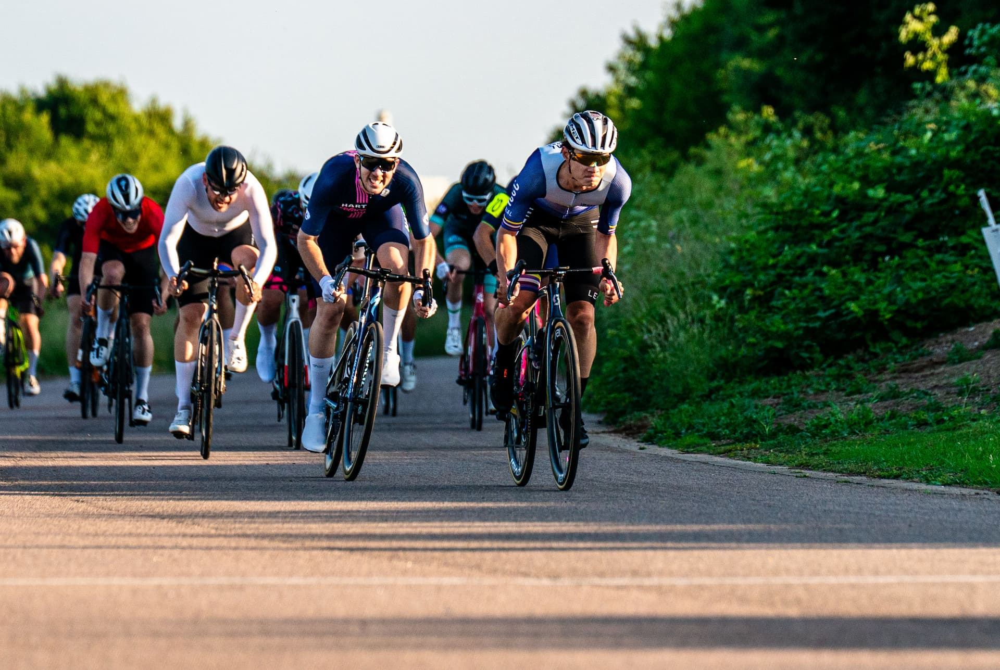

Weekly group rides from the streets of London to the Surrey hills — for all levels, all year round.
A relaxed, welcoming ride to get started with group cycling. Perfect for new members — no pressure, just good company.
Longer routes into Surrey and beyond. Scenic roads, challenging climbs, and a café stop to look forward to.
We compete in BUCS and local events throughout the year. The club helps with transport and subsidised entry fees for members who want to race.
Whether it's your first ride or your hundredth, showing up prepared makes the experience better for everyone. Here's the essential kit list.
Group riding has its own set of rules and signals that keep everyone safe. Don't worry if you're new to it — our Wednesday beginner sessions are specifically designed to introduce you to the basics in a relaxed environment.
Experienced riders in the group will guide you through hand signals, how to hold a wheel, and how to communicate hazards. You'll pick it up quickly.
The most important thing: just show up. You don't need a fancy bike or a certain fitness level. Show up, keep a comfortable pace, and enjoy the ride.
Join the club to get startedWe regularly take part in BUCS (British Universities & Colleges Sport) races, local criteriums, and club-organised events throughout the year.
You don't need to be an experienced racer to get involved. Many members start by coming along as a spectator or joining lower-category events for the experience. It's a great way to push yourself and ride with people at a similar level.
The club often organises shared transport and subsidised entry fees — racing doesn't have to be expensive.
Alongside regular group rides, more competitive members organise their own training rides and intervals. If you're aiming to race, the best way in is to join Sunday rides regularly and introduce yourself.
We also have a Strava club where you can share rides, track your progress, and see what other members are up to throughout the week.
Follow @iccycling for updates →Membership opens up every ride, race, and social. Sign up through the Imperial College Union and we'll see you on the road.